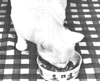

You'll save money and have a happier, healthier pet when you . . .
I'd like to be able to tell you that my tabby got sick just reading the label on a can of her food . . . but honesty makes me admit that she can't read print that fine. I can, however, and the list of ingredients made me feel wretched.
Along with "modifieds", "by-products", "dioxides", "hydrochlorides", and other "ides" and "-antes", there was actually artificial coloring!
"For whom?" I asked myself. "For the cat, who surely doesn't care ... or the owner, who even more surely wouldn't eat the mixture?"
I would never dream of feeding myself or my family an exclusive diet of preservative-laden, artificially colored, modified, canned by-products . . . and I certainly felt that my furry friend deserved better nourishment than the commercial kitty dinners seemed to offer. In fact, I saw no reason why I couldn't make nutritious meals that a feline would like just as well as-and maybe a whole lot better than-canned food!
Furthermore, since the price of cat food has kept pace with inflation (the brand I bought three years ago, for 18 cents a can, now costs 38 cents!), I figured that my own homecooked cat-meals couldn't be much more expensive than store-bought victuals!
After studying a lot of labels on "nutritionally complete" diets for cats, I broke down the ingredients into several main groups: proteins (liver, egg, fish, chicken, and beef) with their own fats and oils . . . starches (wheat gluten, soy flour, and modified starches) . . . and the various vitamin supplements.
My first stop was the meat counter at the grocery store, where I asked a number of questions and made some interesting discoveries. Large fish, I learned, often arrive whole but are sold in fillets, steaks, and other dressed forms. Heads, tails, and bones-and all the meat attached to such pieces-are thrown away. I offered 10 cents a pound to cover the cost of the plastic wrap, but the butcher insisted on giving me the castoffs for free.
Pork liver, I already knew, was among the least expensive of meats, closely followed by pork kidney and chicken gizzards and hearts. Since all organ meat is nutrient-rich, I bought a package of each. When I got home, I knew immediately that I was on the right track, because the cat followed the grocery bag into the house and licked her whiskers expectantly while I unpacked it.
The fish was the messiest to deal with, but quite easy to make into a feline feast. I put it in a pot . . . covered it with water . . . and let it cook to a jellied mass filled with chunks of bone. I then removed the largest sections of skeleton with tongs and discarded them, but left in the little soft ones. That done, I put the "soup" through my food grinder while it was still hot and easy to pour.
As a sample serving of les petits os de poisson en gelee cooled, I added a handful of wheat germ. My little gourmet loved the fishy delicacy, so I packaged it in mealsize quantities and stored my supply in the freezer.
Encouraged by this experiment (which yielded around three weeks' worth of food!), I turned to the other low-cost meats. And, working by trial and error, I came up with the following cat-tested recipes.
ABATTIS EN RAGOUT
To make this treat (which could also be called giblets in broth), boil any combination of chicken gizzards, hearts, and livers until they're tender and serve them whole with a little warm broth. When you make a large quantity, chill and freeze the giblets right in the liquid, so that they won't lose moisture.
FOIS DE COCHON AUX OEUFS
You can save time and energy consumption by making this pork-liver-with-raw-egg dish when you're using the oven for something else. Just put the meat in a foil-overed pan with a little water, and bake it until the liver is pink in the center. Slice or grind it, and serve with a raw egg mixed in.
TARTELETTE DE ROGNON A LA KITTY
To prepare a very healthful kidney pie for your kitty, sauté pork or beef kidney in a little rendered fat or vegetable oil, then chop or grind it up. Mix the meat with wheat germ or egg . . . or both.
LA SOUPE DE POISSONS DU CHAT
It's easy to make a fine fish chowder for your cat. Simply cook four pounds of haddock or other fish heads and scraps to a mush, and then remove the large bones. Grind up everything that's left and stir in 1/2 cup of powdered milk, 1 cup of grain products (from stale rye bread crumbs to oatmeal), and up to 1/2 cup of such ingredients as cheese rinds, chopped outer vegetable leaves, cooked carrots, macaroni and cheese, chicken rice soup . . . or whatever healthful odds and ends you have. Mix the concoction well and freeze it in onemeal portions
Other leftovers that can be added to a chowder-or fed to your cat "straight up"-are cottage cheese, cooked rice, pasta, the cereal the baby didn't eat (assuming you don't feed the youngster sweetened cereal), and almost any other vegetable or grain product. (And, if you think your feline ought to have a vitamin supplement to provide those "boosters" contained in commercial cat food, most pet stores carry a variety of cat vitamins.)
A quick cost analysis will show that-even when using only purchased meats at regular prices-homemade cat meals will cost less than half as much as the store-bought variety . . . and they're all good nutritious food, without fillers, emulsifiers, or artificial coloring.
Best of all, your pussycat will be purrfectly delighted!
EDITOR'S NOTE: If you happen to have a dog as a pet, be sure to check out the article "Feed Your Dog for Free" on page 114 of this issue.
|
 |
|
|